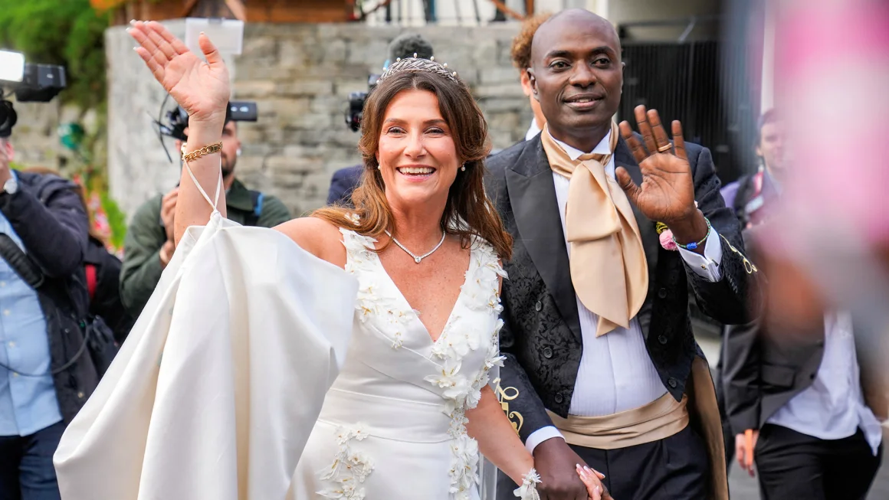

Norwegian princess is known for her grace, intelligence, and dedication to her royal duties. As a member of the Norwegian royal family, she plays an active role in various charitable organizations and initiatives, focusing on issues such as education, health, and environmental sustainability. Her public appearances often reflect her commitment to promoting Norwegian culture and fostering a sense of community among her people. The princess is also admired for her modern approach to royal life, balancing tradition with a progressive vision for the future.
